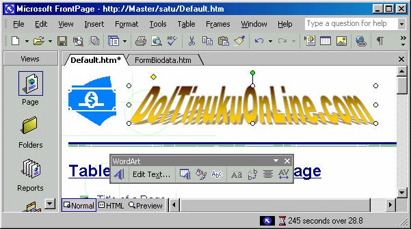

2. Memasang objek WordArt
Dengan FrontPage XP kita bisa membuat suatu teks tampil lebih indah dan artistik.
Fasilitas yang digunakan adalah WordArt. Langkah-langkah pemakaiannya adalah
sebagai berikut:
1. Bukalah halaman yang akan dipasang degan WordArt.
2. Klik lokasi penyisipan pada halaman. Misalnya di sebelah clip art yang pernah
kita pasang sebelumnya.
3. Klik tombol Insert WordArt ( ) pada toolbar Word Art, tampil WordArt
Gallery seperti Gambar 6.10.
Gambar 6.10 Kotak dialog WordArt Gallery dan Editor Teks
4. Kemudian klik salah satu pilihan, lalu klik tombol OK. Akan muncul editor
untuk menuliskan teks seperti Gambar 6.10 kanan.
5. Kemudian tuliskan teks yang Anda inginkan, misalnya “DolTinukuOnline.com”.
6. Kemudian klik tombol OK, maka akan tampil kata ‘Indah Sekali’ di tengahtengah
bidang kerja lembar kerja, seperti Gambar 6.11.
Gambar 6.11 Hasil Word Art
Agar lebih realistis, periksalah hasilnya pada browser dengan klik tombol Preview in
browser.
Gambar 6.12 Preview in browser
2.1 Mengedit Word Art
Untuk mengedit Word Art yang telah kita susun, caranya:
1. Klik word Art. Tombol-tombol pada toolbar WordArt akan aktif seperti
Gambar 6.13.
Gambar 6.13 Toolbar WordArt
2. Untuk memindahkan objek WordArt, cukup dengan geser ke lokasi tujuan.
3. Untuk mengedit teks word art Anda tinggal klik tombol Edit Text… yang akan
menampilkan kotak dialog pengeditan. Anda bisa mengganti teks, mengganti
jenis font (dengan pilihan pada item Font), ba hkan bisa mengganti jenis
WordArt dari Gallery.

Gambar 6.14 Pengaturan baru
4. Klik OK, contoh hasilnya seperti Gambar 6.14.
5. Untuk mengubah ukuran font WordArt, selain menggunakan Editor, bisa juga
dengan menggeser langsung handle di sekitar WordArt sewaktu WordArt
dalam kondisi terpilih.
6. Kalau Anda ingin mengganti jenis WordArt, klik tombol Word Art Gallery
( ) yang akan menyediakan pilihan dari Word Art Gallery.
7. Kemudian klik salah satu pilihan yang Anda kehendaki.
2.2 Tombol-tombol WordArt
Anda dapat menggunakan toolbar WordArt (Gambar 6.13) untuk mengedit objek
WordArt, Tabel 6.1 memberikan keterangan tiap tombol.
Tabel 6.1 Keterangan Tombol WordArt
Copyright © Herlan Lesmana
Created with the Freeware Edition of HelpNDoc: Free help authoring environment